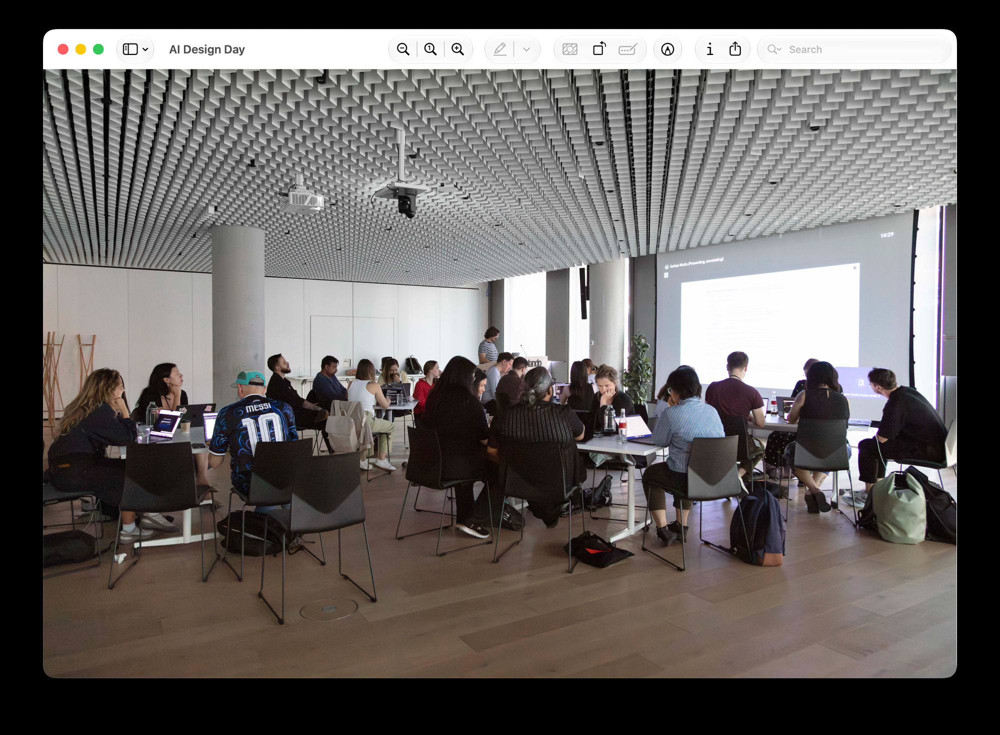
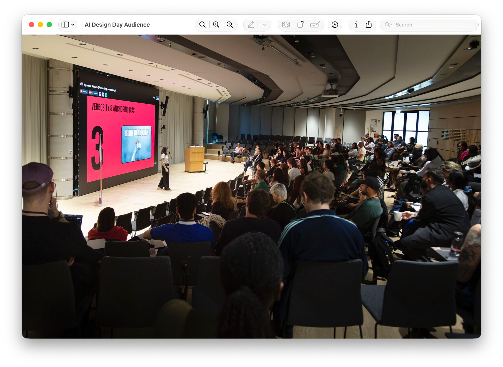

Zalando · Jan 2026–present
AI ENABLEMENT
150+ designers using unauthorised tools, real GDPR exposure, no shared standards. The mandate came from the work itself; see Occam. I designed the strategy and infrastructure to fix it, then validated the model by shipping a production feature myself: design to live in half a day.

The problem
81% of the org, no approved path
I surveyed 90 designers across the community and worked with about 25 who already used AI every day. Within the survey, 81% were running AI tools on personal accounts, with no approval and no oversight, and pasting company data into them. I did not treat the tools as the real risk. I saw the real exposure elsewhere: knowledge locked in silos, GDPR liability, and an organisation learning bad habits at scale.
The tools also failed wherever the work got specific. Zalando runs a proprietary design system, a React codebase, GDPR constraints, and server-side rendering (SSR) requirements, and no available AI tool could hold all of it. One pilot tool withdrew from the integration entirely, calling Zalando's setup too advanced for its first version. Designers reached for AI to move faster, the survey and interviews agreed, and without Zalando-specific standards the shortcuts only created rework.
No one assigned me this. I built it from what the work was already showing me. Earlier, I had built an AI discovery prototype, Occam, and presented it to a Zalando co-founder, and that project made the gap impossible to ignore.
Safe Harbor
An approved path, not a crackdown
I built the response as Safe Harbor: a set of approved tools and a shared environment, with a deliberate push toward collective practice rather than enforced compliance. I chose that shape from the survey results. Designers were already using AI heavily and valued the speed it gave them. I judged that a crackdown would only drive the behaviour further out of sight, and that an approved path would keep it in the open.
I secured backing from design leadership and the Chief Product Officer (CPO) early, on the strength of first results. A week before launch, engineering leadership flagged the pilot tool as unapproved. I proposed a one-day, time-boxed pilot in place of permanent approval, and I proceeded.
Programme
Four tracks built as a system
I built four tracks, infrastructure first, then practice. I aimed each one at a different layer of the gap, from the design system itself to how designers and engineers work together in the codebase.
Track 0
AI-ready design system
I made the design system AI-ready. I connected the Zalando Design System (ZDS) through MCP, so any AI tool now generates components using Zalando's tokens, brand rules, and accessibility standards. I built the other three tracks on that foundation.
Track 1
Shared practice
I built shared practice. I ran monthly AI Jams on live briefs and real product constraints, not sandbox exercises, and shaped the format so learning happens in the open rather than in silos. Fifteen participants and four facilitators joined the first session.
Track 2
File quality
I raised file quality. I wanted Figma files that humans, engineers, and AI could all read, so we built the zSpecs plugin. It has flagged 168,000 issues across files, and 23 active users have fixed 4,836 so far.
Track 3
Design in code
I put design in code. Designers now work directly in the production codebase, with no handoffs, no tickets, and no translation step, and their feedback cycle drops from days to minutes.

Proof
Five teams, one day, production code
I had to prove the model by doing it, not by pitching it. Five teams ran at once, each pairing a designer who brought the intent, an engineer who brought the codebase, and AI to assist. I ran one of the pilots myself, taking a new product page feature from design to merged, production-ready code in half a day. We later pushed it to production for testing. I wanted to know exactly what I was asking the teams to do.
A designer with no coding background pushed a commit that passed code review. Another team built an entire product page feature directly in code.
Outcomes
From isolated experiments to a working practice
Designers had been experimenting in isolation. Now they work as a shared discipline. An active working group of more than 20 designers discusses approaches, shares setups, and builds on each other's work, with a shared GitHub repo, a bi-weekly cadence, and pilot templates any team can pick up. More than eight teams now run their own pilots. One of them cut a delivery sprint from four weeks to one. About 150 designers across the community have now come through the programme.
